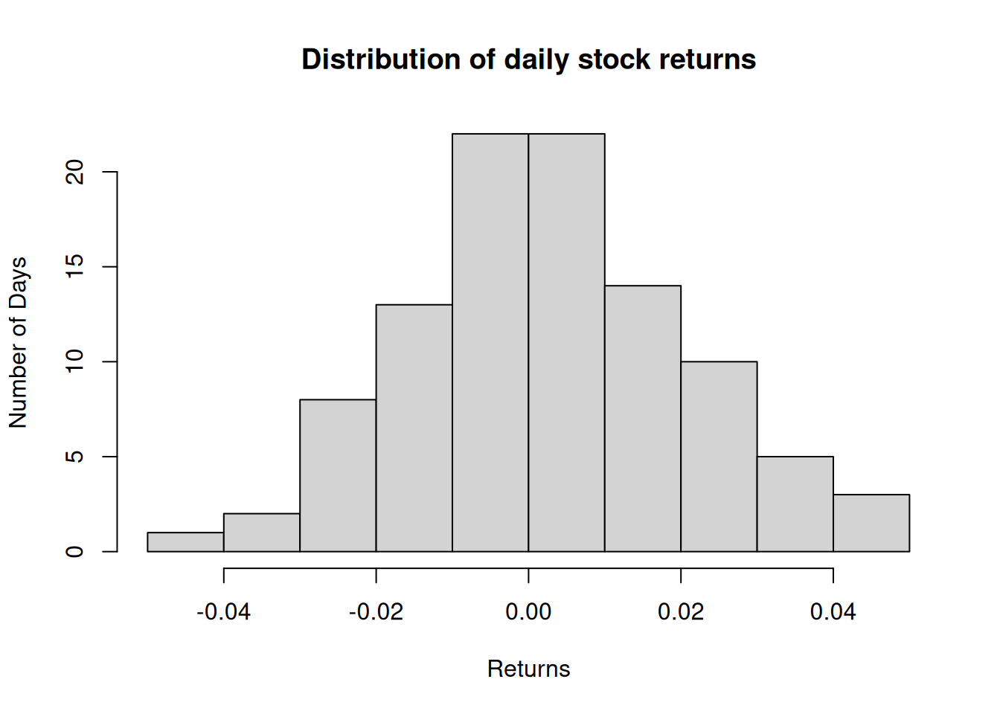
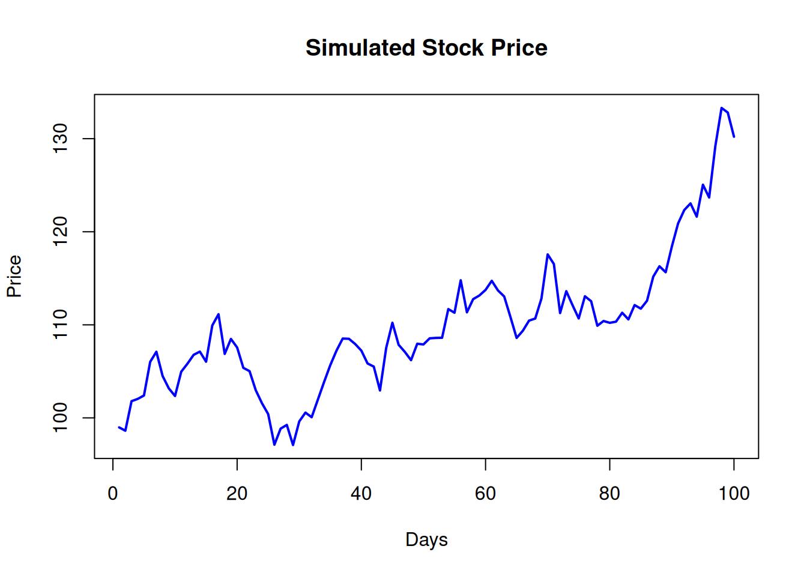

With Applications to Computational Finance using R
Author
Martin Summer
Published
29 January, 2025
Preface
“What I hear, I forget; What I see, I remember; What I do, I understand”
Confucius, 551-479 BC’
What are these lecture notes about ?
These lecture notes support the course An Introduction to Probability - with Applications to Computational Finance using R. The course introduces essential probability concepts that every finance practitioner must understand. As probability is crucial for solving financial problems computationally, we will use computational finance as the context to develop these ideas. The focus will be hands-on learning, enabling you to understand and internalize concepts by applying them yourself.
To make abstract concepts like randomness, chance, and probability more accessible, we will leverage computational tools, in our course this will be R, and visualizations built by using R. By actively engaging with these tools, you’ll not only deepen your understanding of probability but also enhance your ability to apply it to real-world finance problems.
NoteKey learning objectives
Understand foundational probability concepts.
Apply probability principles to solve computational finance problems.
Gain hands-on experience using R for probability and finance applications.
Develop proficiency in interpreting and visualizing probabilistic data.
But how can we build abstract concepts such as probability, random phenomena and chance by our own hands? While probability is a mathematical theory, it gains practical value and an intuitive meaning in connection with real or conceptual experiments such as, the future change in a stock price index, the future value of a portfolio of securities, the chance that a creditor is not going to be able to pay back your loan.
Many of these experiments we can nowadays simulate on the computer. We can can construct, build and simulate a huge variety of random phenomena. We can - for instance - implement models of random fluctuations of asset prices. We can model financial risks and contemplate possible future scenarios through simulation.
The arrival of the computer has been indeed a sea change for the mathematics of probability because it allows both reflecting about probability through theorems and proofs as well as by making use of computer simulation. We can approach our understanding of abstract concepts by building them with our own hands on the computer. This is the approach to teaching you probability in this course.
Let me give you one example right away. Don’t worry if you do not understand precisely what the following snippet of code is doing. We will learn the syntax of the R language as we go along. This is just to demonstrate you what I explained in words before by a simple example highlighting simulation of random processes and visualization.
TipAn R example for illustration
Simulate stock prices with normally distributed random daily returns.
# Simulate daily returns for a stockset.seed(123) # Ensure reproducibilityn <-100# Number of daysdaily_returns <-rnorm(n, mean =0.001, sd =0.02) # Normal distribution# Compute cumulative returnsprice <-cumprod(1+ daily_returns) *100# Starting price = 100price
hist(daily_returns, main ="Distribution of daily stock returns",xlab ="Returns",ylab ="Number of Days")

Now visualize the price dynamics:
# Visualize the stock priceplot(price, type ="l", col ="blue", lwd =2,main ="Simulated Stock Price",xlab ="Days", ylab ="Price")

This example highlights:
How randomness influences stock price movements
R’s usefulness in simulations and visualization.
It is, however important to always keep in mind that the real world is different from the theory world as well as from the simulated world. The real world is both richer and more complex than both theory and simulation. It may contain features which need to be be taken into account for the explanation of phenomena which are absent in theory or in the simulation. We will try our best to develop your feeling for the difference, between theoretical concepts, simulations and applications as well as for the interdependence of these three areas.
There are many ways to build virtual objects and to run simulations to manipulate them. For this we will need a programming language. The language we choose for this course is R and the integrated development environment RStudio. This is one of the main languages used in data analysis, statistics and data science and is widely used in industry and academia. It will be our tool to do probability in this course.
Since this course was being taught the first time in 2021, new AI tools such as large language models (LLMs) like chatGPT, Claude or Gemini have been introduced. These new powerful tools create new opportunities for learning and reinforcing knowledge such as the concepts learned in this course. In this year I will show you throughout the course, how you can leverage AI tools like ChatGPT for enhancing your learning experience. I encourage you to use these tools to generate examples, explain concepts, and debug R code or perhaps translate R code into a language you might be more familiar with on the fly to help you understand how things are expressed in R.
Using an LLM to Enhance Your Learning Experience
In these lectures I try to help you building experience how to integrate large language models or LLMs into your learning and study process as well as to support you in coding and programming. There are several such models currently on the market. For this course I will use openAI’s chatGPT as a tool. ChatGPT is available in a free version and in an enhanced pay-version.
Throughout this course, you’ll learn how to use ChatGPT to support your studies. As a tool, it offers capabilities that can make learning probability more interactive and engaging.
Here’s are some example for interesting use cases:
Clarify Concepts:
Ask ChatGPT to explain concepts in simple terms or elaborate on topics you find difficult:
“Explain the concept of a probability distribution with an example.”
Generate Examples:
Use it to create additional examples for practice:
“Can you give me an example of a random variable and how it applies in finance?”
Debug R Code:
If you encounter issues with your R code, paste the code and ask:
“Why does this R code not run, and how can I fix it?”
Practice Exercises:
Request custom exercises:
“Create three exercises to practice calculating probabilities for dice rolls.”
Simulate Interactive Discussions:
Simulate discussions with ChatGPT to test your understanding:
“I think the variance of a constant is zero. Am I correct? Explain why or why not.”
Learn Best Practices in R:
Ask for tips to improve your coding practices:
“What are the best practices for writing clean and efficient R code?”
Important Note:
While ChatGPT is a powerful learning tool, remember to verify the outputs, especially for complex calculations, and always critically evaluate its suggestions. One such tool you might consider for cross checking is Wolfram | Alpha, which you can find here: https://www.wolframalpha.com/ in a free version.
Downloading and installing R
So lets start by downloading and installing R first. R is an open source project maintained by an international team of developers. The software is made available through a website called the comprehensive R archive network (http://cran.r-project.org).
At the top of this website, in a box named “Download and install R” you will find three links for downloading R. Choose the link that describes your operating system, Windows, Mac or Linux. These links will lead you to the necessary information you need to install a current version of R. The easiest install option is to install R from precompiled binaries. There is also the option to built R from source on all operating systems if you have the tools and the expertise to do so. R also comes both in a 32-bit and a 64-bit version. It does not make a substantial difference which version you use. 64-bit versions can handle larger files and data sets with fewer memory management problems.
Downloading and installing RStudio
RStudio is an application that helps you write and develop R code. It makes using R much easier for you than using it in isolation. The interface of RStudio looks the same across all operating systems.
You can download RStudio for free from https://www.rstudio.com/products/rstudio/. Select the box RStudio Desktop and follow the download instructions. RStudio Desktop is free. Note that you need to have a version of R installed to use RStudio.
If you have successfully installed R and RStudio, we are ready to start.
Throughout this course I will use R with RStudio and when I do code demonstrations I will use this environment. R can be used in many other ways of course. Some of you might be accustomed to work with Jupyter Notebooks. I will just mention here that with some minor tweaks R can be used with Jupyter notebooks as well. I will not go into the details here. Those of you who are interested in such a setup are encouraged to ask chatGPT:
“Please give me a step by step instruction how to set up the system to use R through Jupyter notebooks instead of RStudio.”
Click on the “Creat a free account” button to create an account. You can sign up using an email address or your existing Google or Microsoft account.
Follow the prompts to verify your email address and complete the registration process.
Once registered, log in to access ChatGPT. You can start using it immediately for your learning needs.
Using ChatGPT is free, but note that certain features or advanced versions (e.g., GPT-40) may require a paid subscription. The free version (GPT-3.5) is sufficient for getting a feeling of what the LLM can do. They payed version is more powerful.
Prerequisites
This course is built as an intuitive and elementary introduction to the field. No knowledge of probability or R is assumed and all concepts are built from scratch. You should be able to study for this course by relying on the slides and these lecture notes only without having to consult a textbook or further literature.
Many of you will have heard or studied probability at some stage in college or at university. I hope the course will appeal to the newcomers as well as to the experienced. While it should allow the first group to quickly learn some of the most important concepts and raise your curiosity and excitement about a field of knowledge which is both beautiful and immensely practical, I hope it will open a new perspective for the more experienced among you and thus help deepening your understanding of concepts you might already have heard elsewhere.
The lectures develop probability concepts and R concepts in parallel. This follows the idea underlying this course to develop your knowledge of probability concepts by building them on the computer yourself and play with them. In this way we hope to build your R skills more thoroughly because they appear in a natural context and that this context also reinforces your understanding of probability.
Structure of the Notes
The notes are structured into five main chapters. The idea is to cover each main chapter topic in one of the five double units allocated to this course.
Each of the main chapters or lectures are followed by a so called project. The projects are meant to be worked on by you in the assigned groups between the lectures and should help you to practice and to deepen what you have learned. We will discuss the project questions at the end of each lecture. We will also distribute a worked problem after you have worked on it yourself.
We begin the first lecture, lecture 1 by discussing some of the main basic probability fundamentals by putting them in their historical context where the first ideas appear of how you could measure something such elusive as chance at all. Surprisingly these first simple ideas are already very rich and lead us quite far into the field and its problems.
In this lecture we will also give a first panoramic run down of what you can do with R. In this lecture the first application will be a simple game of chance, the tossing of a coin. Already this very elementary example has direct relevance for computational financial modelling of security prices as we will learn throughout the course.
Even the very basic ideas of probability and R enable us, already at this early stage, to take on a serious real world problem as well. In fact, with only a few intuitive concepts we can study and understand problems of the chance of coincidences. This class of problems is at the heart of the science of constructing cryptographically safe finger prints, so called hash-functions, which are at the heart of crypto-currencies such as Bitcoin.
The first project will deal with engineering secure transaction indentifiers for a digital payment system and study how the construction of such identifiers has to take into account key system paramaters such as transaction volume and number of participants in the payment system.
Lecture 2 will introduce the first basic intuitive ideas a bit more formally and also generalize them. In particular it explains the basic ideas of how probability and frequencies of chance events are related. We will discuss the power as well as the limits of these ideas for applied work in probability.
In this lecture we will go deeper into the R language, explain its many data types and how to reference and change data in more complext data structures.
Project 2 will help you to train and practice your understanding of data manipulation in R by useing a really cool empirical probability pattern on the empirical frequency of leading digits - Benford’s law - for checking whether the data could be trusted or do look fishy on purely probabilistic grounds.
In Lecture 3 we will learn about the key concept of conditional probability. This lecture contains lots of concepts but it is also of key importance for understanding many problems in Finance and the management of financial risks. We will explain how the misunderstanding or perhaps willful ignorance of the concept of dependence is at the root of the big financial crisis of 2007-2008. We will also learn, how updating your probability assessments in the light of new data is important for investment decisions.
On top of this directly practical considerations, we will also learn how this particular problem of updating probability assessments in the light of new information helps us close a conceptual gap in the pure frequency interpretations of probability.
In terms of R this lecture gives you a bit of a break in the sense that it applies what we have learned before and thereby reinforces what we have already learned. It will introduce some useful techniques and functions along the way.
Lecture 4 will introduce you more precisely to the key probabilistic model of random returns and other random phenomena in Finance: The concept of a random variable and the concepts of expected value, variance, standard deviation, covariance and correlation. We will discuss at length the modelling of random returns and learn about the basic workhorse model of asset price dynamics, the binomial lattice.
This discussion gives us also the appropriate context to discuss how to write programs in R and some of the principles and constructions that are most useful for this task.
In terms of R this lecture will teach you how to write more complex programs by using R’s control structures and by modularizing code.
The final Lecture 5 discusses the concept of continuous random variables, which is very important for a large body of applied work. You will be introduced to the normal distribution and its power and limits for modelling random returns and financial risks.
In terms of R this lecture will provide a good context for discussing what matters when you want to make your R code fast and efficient.
Acknowledgements
I would like to thank my friend and colleague Branko Urošević that he entrusted me to develop this course for his new and innovative program in computational finance.
I am very grateful for the opportunity to make a contribution to this effort and for all the encouragement, support and advice I got from him for this project. Of course he bears no responsibility whatsoever for any shortcomings of these lecture notes.
I would also like to sincerely thank the former students of the bootcamp probability course who gave me feedback and studied from the lecture. They were a fantastic and enthusiastic audience from who I learned a lot.
References
When you teach such a fundamental field as probability theory and its applications in Finance you teach from a core knowledge that has been built by many pioneers, experts and other teachers in this area. In this sense nothing contained in this course is original work. The only contribution a teacher can make is the way how the material is presented and combined. In this sense these lecture notes are nothing but a collection of well known and time tested material as well as an experiment in yet one more, hopefully innovative exposition.
But even in this field I have copied and recycled a lot from the teaching materials and collective wisdom of other colleagues whose examples and problems I found particularly helpful. Without any claim to completeness let me briefly go through the sources I have relied on most strongly when developing this course.
With respect to probability theory two sources have influenced me most and I have followed their example extensively in this course: William Fellers “An introduction to probability theory and its applications volume 1.” which first appeared in 1957. (Feller (1968)). While really old by now it is still in my view one of the most outstanding reference with respect to exposition and clarity of explanation as well as an inspiring source of enthusiasm for the subject. I just would like to mention as an aside that Feller (born Vilibald Srećko Feller) was a Croatian emigrant to first Germany and then the US in the 1930ies. You might claim him as a citizen of Croatia, former Yugoslavia or even Austria, since when he was born in 1906, what is now Croatia was still a part of the Austrian-Hungarian empire.
My second most important source for this course in terms of probability was Karl Schmedder’s course “An intuitive introduction to probabiliy”, which Karl developed for the online platform Coursera. I consider this course an outstanding didactical achievement and masterpiece. If you find this lectures fun, I can only encourage you to also do the course on Coursera, when you find time. It is for a reason that Karl’s course is the mostly viewed Coursera course from Switzerand.1
1 See https://www.coursera.org/learn/introductiontoprobability
In terms of R and R programming I have followed and copied a lot from Garett Grolemund’s excellent book “Hands on programming with R”.(Grolemund (2014)) I encourage you to study this book. From it I have not only learned about one of the most excellent explanations of R concepts but also the insight that these concepts are best explained within a very concrete and non trivial application context rather than in a patchy series of toy examples.
With respect to Finance and investments I have relied on the excellent book by David Luenberger, “Investment Science”. (Luenberger (2009)) If you can get a hold of this fantastic work, I can only encourage you to get one and have it on your shelf. It is a role model of clarity of exposition and has much more to offer than we can cover in this book.
Finally with respect to the history and the interpretations of probability, I have learned the most form the excellent book “10 great ideas about chance”, by Persi Diaconis and Brian Skyrms. (Diaconis and Skyrms (2019)) If you find probability interesting or even fascinating I encourage you to read this book at some stage, if you find time. It is full of highly interesting philosophical, mathematical, historical and fun facts and ideas about this very rich subject.
But now, lets get straight down to the matter at hand.
Diaconis, Persi, and Brian Skyrms. 2019. 10 Great Ideas about Chance. Princeton University Press.
Feller, William. 1968. An Introduction to Probability Theory and Its Applications. 3rd ed. Vol. 1. Wiley.